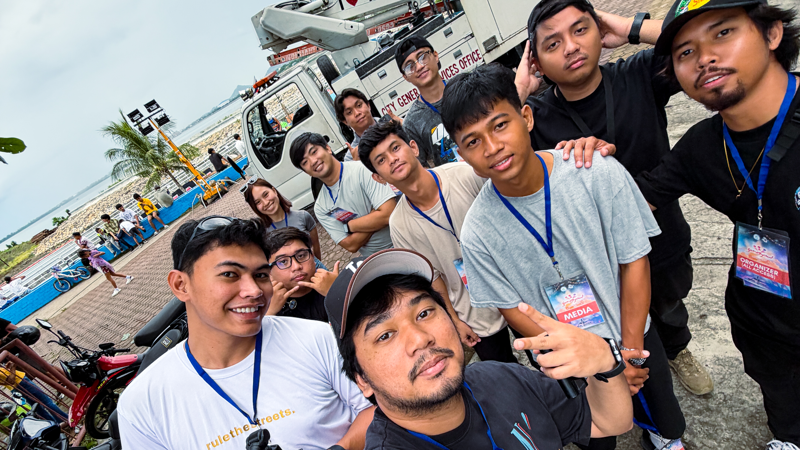
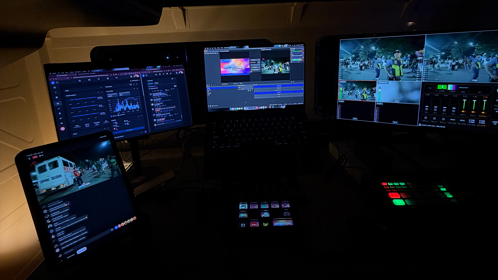
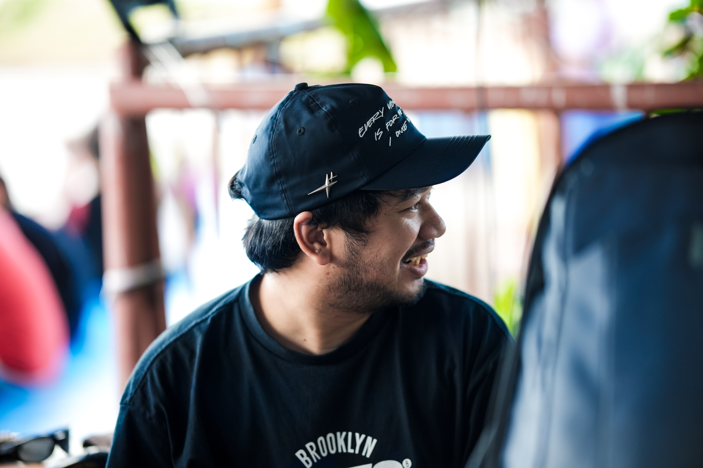
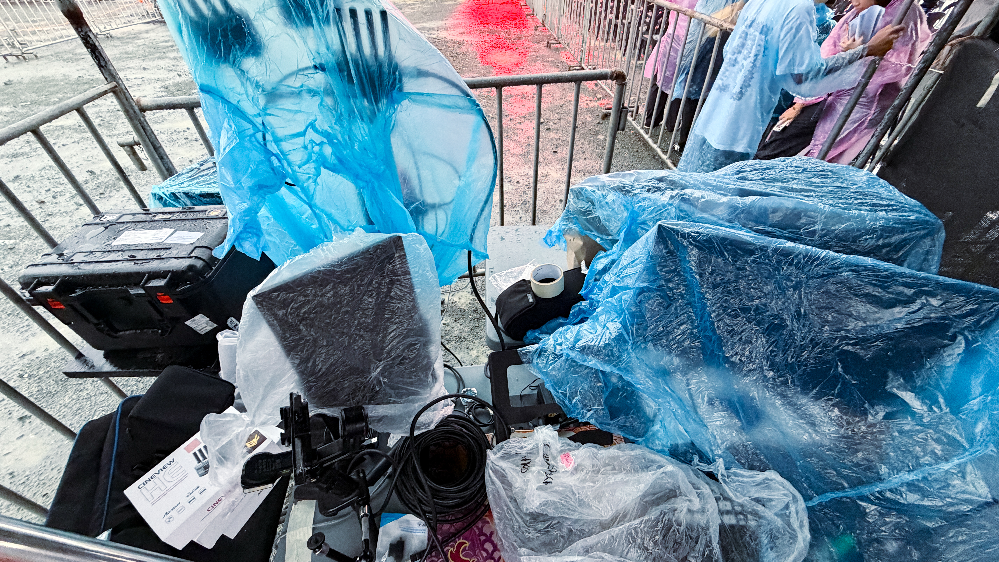
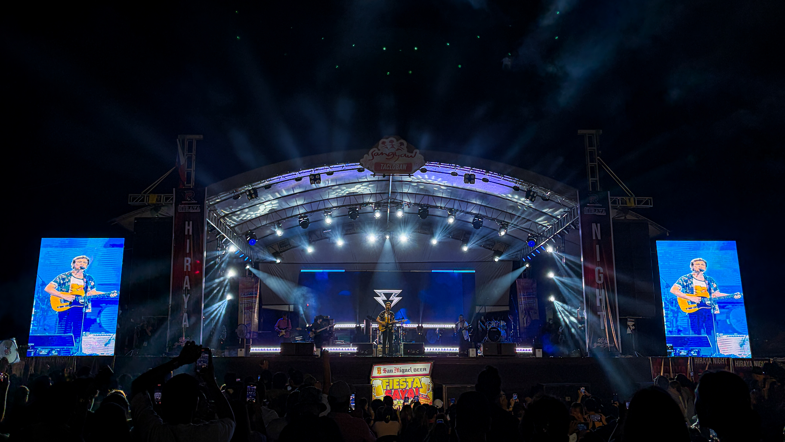
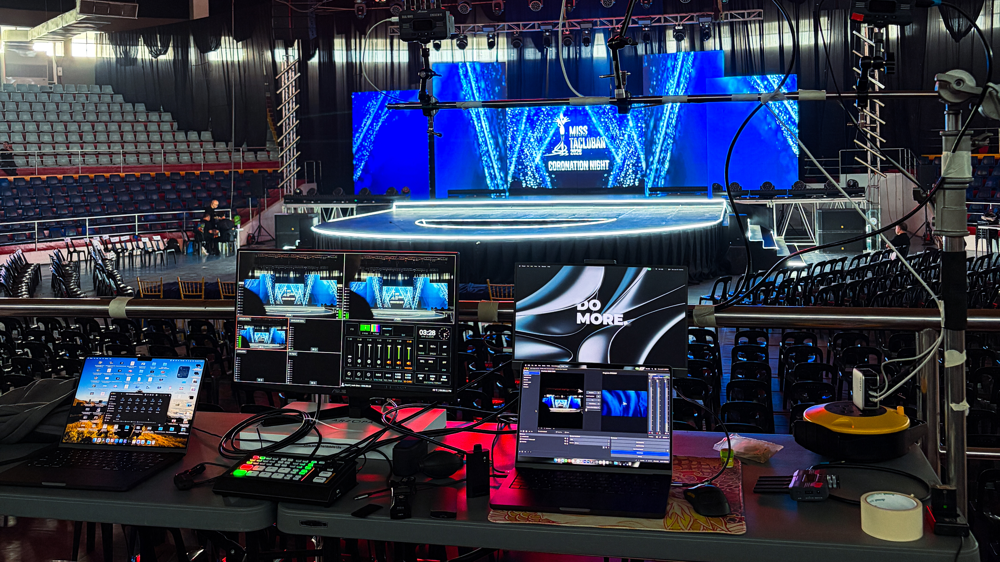

Sangyaw Festival 2026
Returning the following year, I served as a Videographer and Live Stream Operator throughout Tacloban City’s month-long celebration, continuing to document one of the region’s most celebrated cultural events.
Capturing the festival from behind the camera and helping bring it to audiences in real time made this experience especially meaningful. It was a privilege to help tell the story of my hometown through every moment I captured.
This wasn’t just another production. It was a celebration I was proud to help tell.